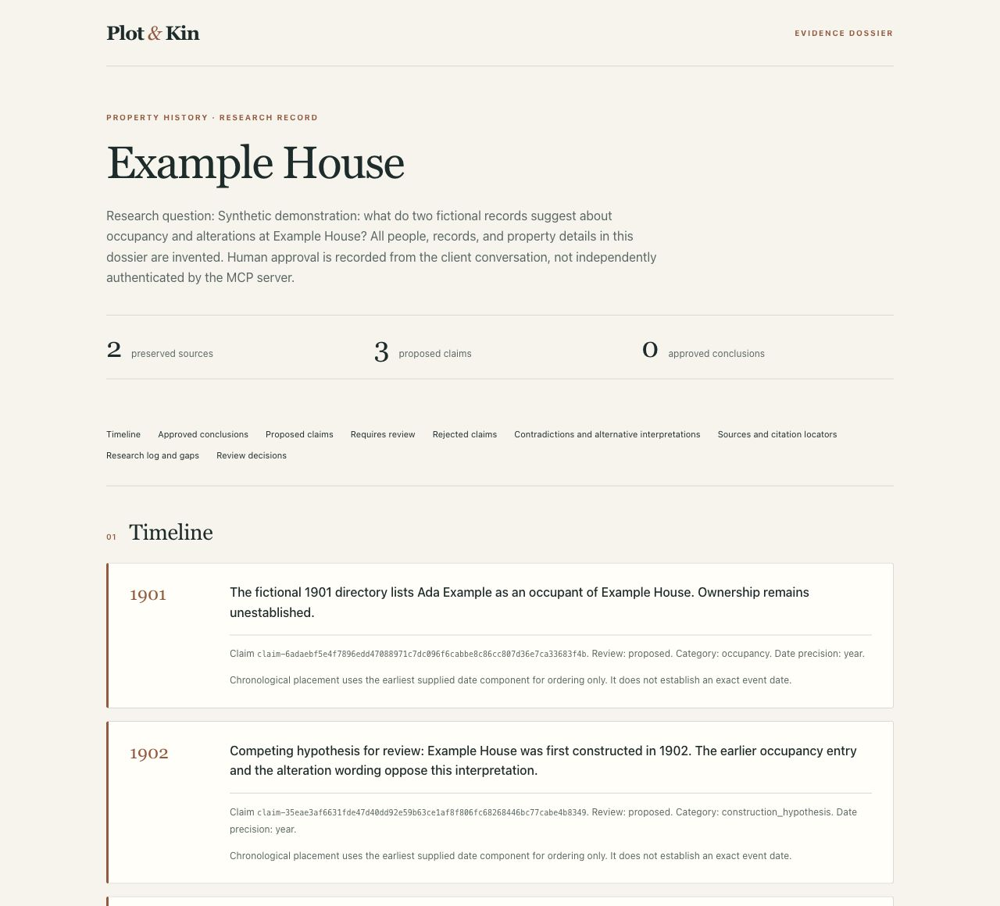

Open-source research prototype · Washington, DC
Every address
has a story.
Make yours
traceable.
Follow the people, places, and records behind a property. Turn scattered evidence into a cited dossier you can inspect, challenge, and carry forward.
For professional researchers. Works through Codex & Claude Desktop.
01 / THE IDEA
A compelling history
needs a visible
chain of evidence.
A name in a directory. A date on a permit. A building on an old map. Each is a clue. The work is understanding what they establish—and what they leave open.
Plot & Kin gives that work a durable structure. Keep originals close, attach findings to evidence, preserve disagreements, and record the reasoning that brought you to a conclusion.
Read the evidence rules- 01
Source
The original, its provenance, and its limits.
- 02
Passage
A page, quotation, or image region you can revisit.
- 03
Claim
A proposed finding with support and opposition.
- 04
Review
An explicit decision tied to the version examined.
02 / THE DOSSIER
Markdown · HTML · JSONResearch worth
handing on.
Approved conclusions, proposed findings, a timeline, contradictions, and open questions. A report another researcher can inspect. A backup that carries the underlying evidence with it.

The report is only part of the record. Portable backups retain originals, derived images, citations, corrections, review history, research logs, and checksums. Restore into a fresh project with the evidence intact.
01 / QUICKSTART
An address. A question.
A place to begin.
Save real research on your computer from the first case. No Astra account or separate model key is needed for public records and text documents.
Automated package checks pass on Apple Silicon Mac, Intel Mac, and Windows x64. The Apple Silicon Claude Desktop walkthrough covers installation through a sample dossier export. Public release downloads and the Codex and Claude Code Git catalogs are published. Official directory approval remains separate. See the acceptance checklist for remaining desktop checks.
Choose your client. Bring your question.
Download a release and install the Claude Desktop extension or register the Codex local marketplace. Each package includes its runtime. Your first local case needs no separate Node.js installation, database account, or model API key. Codex local-source registration may require its CLI depending on the client version.
Claude Code users can install the Git plugin with Node.js 22.19+, npm, and Claude Code 2.1.291+.
Available now: developer setup.
This path requires Node.js 22.19+, npm, and Git.
git clone https://github.com/jestatsio/plot-and-kin.git
cd plot-and-kin
npm ci
npm run build
node dist/cli.js setupChoose Codex, Claude Desktop, or both. Select Save on this computer, then restart your client. Setup checks the local server, preserves unrelated client settings, and tells you where your library lives. Confirm the connection in your client by asking to get started.
Release installer paths and platform status
Cases persist in a local SQLite database. Originals stay in the library, documents to import go in its imports folder, and named dossiers go in exports. Ask the client to show those locations.
02 / CONNECT YOUR CLIENT
Two clients.
One saved research record.
Both client packages use the same local library by default. Guided setup is also available. Use one connection method per client, then start with an address and question, review a cited finding, and return to the case tomorrow.
CodexA custom marketplace and research skill
Download the -codex.zip release for your computer, extract it to a permanent folder, and register that folder as a local marketplace source. Then install Plot & Kin. The package includes the server, runtime, and research skill. The published Git marketplace offers a separate entry for each platform. This custom marketplace is separate from an official OpenAI directory listing.
For the developer path above, select Codex during setup and restart it. Ask “Help me get started with Plot & Kin.” A welcome offers a new address, a saved case, or a labeled fictional sample.
Claude DesktopAn extension with the same evidence tools
Download the .mcpb release for your computer and use Settings → Extensions → Advanced settings → Install extension. Local research has no required configuration fields. This directly distributed extension is separate from a public-directory listing.
For the developer path above, select Claude Desktop during setup and restart it. Ask “Help me get started with Plot & Kin” or “Continue my Rosedale Street case.” Both clients share saved sources, review decisions, contradictions, and next steps.
Astra when you want it
Use the optional guided setup with --client none --connect-astra to connect your own database securely while keeping your existing plugin connection. Existing cases stay local until you approve a specific transfer. The verified destination preserves the evidence and history, while the original local case remains an archive. Original document files stay on your computer. An Astra connection is not a cloud backup.
Setup verifies the actual server process. Host connection, native credential storage, and the complete journey in each desktop application remain separate items on the acceptance checklist.
03 / RESEARCH WORKFLOW
From a lead to a finding.
The investigation happens in your client conversation. Plot & Kin keeps the evidence, decisions, and unfinished work available across sessions.
Frame the question
Begin with an address and research question. Add known information and source restrictions as needed. Treat address matches and historical equivalents as candidates to examine.
Gather within a boundary
Start a research run. Search the selected DC sources and import permitted documents. Retain successful searches, empty results, errors, and dead ends.
Read against the original
Extract existing text first. Use optional model processing for scans, handwriting, photographs, or map excerpts. Preserve uncertain readings and correct errors without erasing prior versions.
Propose, compare, review
Attach supporting and opposing passages to claims. Keep ambiguous people and properties separate. Explicitly approve conclusions and identity proposals against the version you examined.
Save the research record
Export a dossier that separates approved conclusions from proposals and open questions. Save a portable backup to continue the work beyond the originating conversation.
Defaults bound server activity. The processing budget excludes client charges and Astra hosting. Progress is retained when a limit is reached.
“Create a project for this DC address. I want to investigate when the building was constructed and who occupied it. Start with public building records, keep permit dates separate from construction dates, and bring proposed findings back for my review.”
04 / EVIDENCE & TRUST
Make uncertainty useful.
A careful dossier shows where the evidence ends. These distinctions stay visible throughout the research.
- Ownership ≠ occupancy
- A named owner does not establish who lived or worked at a property.
- Permit date ≠ construction date
- A permit, an assessment, and a building's appearance on a map establish different things.
- No result ≠ evidence of absence
- An empty search or denied request describes the search outcome, not the historical record.
- Matching names ≠ matching identities
- Proposed identity merges require evidence and explicit review. The original entities remain preserved.
Citations retain page, passage, or image-region anchors when available. Document-level citations remain possible and visibly less precise. Corrections preserve the original extraction and send affected conclusions back for review.
Review decisions record the target revision, reviewer label, approval wording, and a snapshot. This is an audited workflow convention. The server does not independently authenticate the human conversation.
Where your material goes
| Location | What it holds |
|---|---|
| Your computer, by default | Saved cases, evidence, decisions, logs, originals, derived images, and exports. |
| Your Astra database, if connected | Structured research for cases you explicitly transfer, or your selected Astra default. Original files remain local. |
| Your selected model provider | Content needed for the document-processing operations you request, when configured. |
| Your MCP client | The conversation and the tool results it requests. |
Local storage preserves your research independently of the chat. Your client's data policies still apply to the conversation and tool results. Read the privacy and data-handling notice.
05 / SOURCE COVERAGE
Washington, DC.
A deliberate starting point.
The first locality combines selected public services with documents you supply. Coverage is a starting point for investigation, not a complete property or title history.
HistoryQuest building records
Structured address lookup against DC's public historic-building dataset. Preserve the original attributes, attribution, and geometry. Treat compiled information as a lead to archival evidence.
View the public service1880 Sanborn map excerpts
Retrieve bounded excerpts from DC's historical map service. Retain service identity, actual extent, attribution, and available rights information. Read and cite regions. GIS alignment and historical parcel reconstruction are deferred.
View the public serviceYour source material
Import documents, images, and explicitly supplied public document URLs. Subscription material enters through permitted manual imports. Preserve source restrictions alongside the evidence.
Coverage, rights & fixture provenanceHistoryQuest's catalog identifies a CC BY 4.0 license for the compiled dataset. Underlying archives and map images may have different rights. Public access does not itself establish redistribution permission. The Library of Congress search connector is deferred.
06 / DOCUMENT PROCESSING
Read more.
Keep the original.
Embedded-text extraction and evidence review need no model API key. For scans, handwriting, photographs, and maps, choose OpenAI or Anthropic explicitly. Providers are never switched silently.
node dist/cli.js setup --client none --processingClient packages can use the bundled runtime for optional guided setup. Keep --client none to preserve your existing plugin connection.
Choose an OpenAI GPT-4.1 mini preset, an Anthropic Haiku 4.5 preset, or custom model settings. Preset prices were verified October 1, 2026 and expire after 90 days. Setup shows the provider, rates, and source before you enter a key securely outside chat.
macOS uses Keychain. Windows encrypts credentials for your Windows account with DPAPI. Original pages stay in the library, while the selected provider receives the content needed for requested interpretation. Missing keys or stale prices leave public-record and text research available.
Interrupted processing and uncertain billing
Completed pages are cached by source, page, provider, model, and processing version. Use page_process to resume a saved result. Unknown billed outcomes pause instead of automatically issuing another request.
Verify the actual provider charge before using budget_reconcile. A fresh billable attempt needs separate explicit approval through page_retry. Correct the underlying configuration before recording a resolution with processing_unblock.
If a hard exit leaves an operation reserved, stop every process that could still dispatch it, verify provider billing, then attest dispatchStopped: true during reconciliation. This is an operator statement, not an independently verified process check.
Provider adapters have automated contract tests. Real-model transcription accuracy, including difficult handwriting, has not yet been measured. Always inspect extracted evidence against its source.
07 / EXPORT & RESTORE
Leave a trail.
Take it with you.
Export a readable dossier for review. Make a separate portable backup to preserve the complete project, including original bytes, derived artifacts, corrections, decisions, and logs.
“Show the dossier here and save an HTML copy. Also create a portable backup of this case.”
Exports have recognizable case names. Open the printed export folder in Finder or File Explorer. If your client cannot open a local file, the dossier remains available directly in chat. Advanced export and restore commands are available in the setup guide.
Versioned JSON backups include asset bytes and SHA-256 checksums, with a default serialized limit of 250 MiB. Credentials and machine-specific paths are excluded from record metadata. Original source files retain their actual content.
Restore into a fresh destination. The server validates hashes and references before completion and never silently overwrites an existing project. To resume an interruption, repeat the same bundle, destination, and operation ID.
Reuse is a deliberate act
Explicit cross-project import copies selected records and their evidence dependencies, preserves origin provenance, and resets claim and entity approvals for the new research context. Research is never automatically pooled across projects.
08 / REFERENCE
Go deeper.
BUILT IN THE OPEN
This is a researcher-facing prototype. Actual desktop-client acceptance, live extraction quality, and researcher effectiveness remain to be evaluated. Shared accounts, billing, a managed hosting service, a standalone research web app, and nationwide coverage are outside this release.
Share a reproducible issueTHE HISTORY OF PLACES. THE LIVES BEHIND THEM.